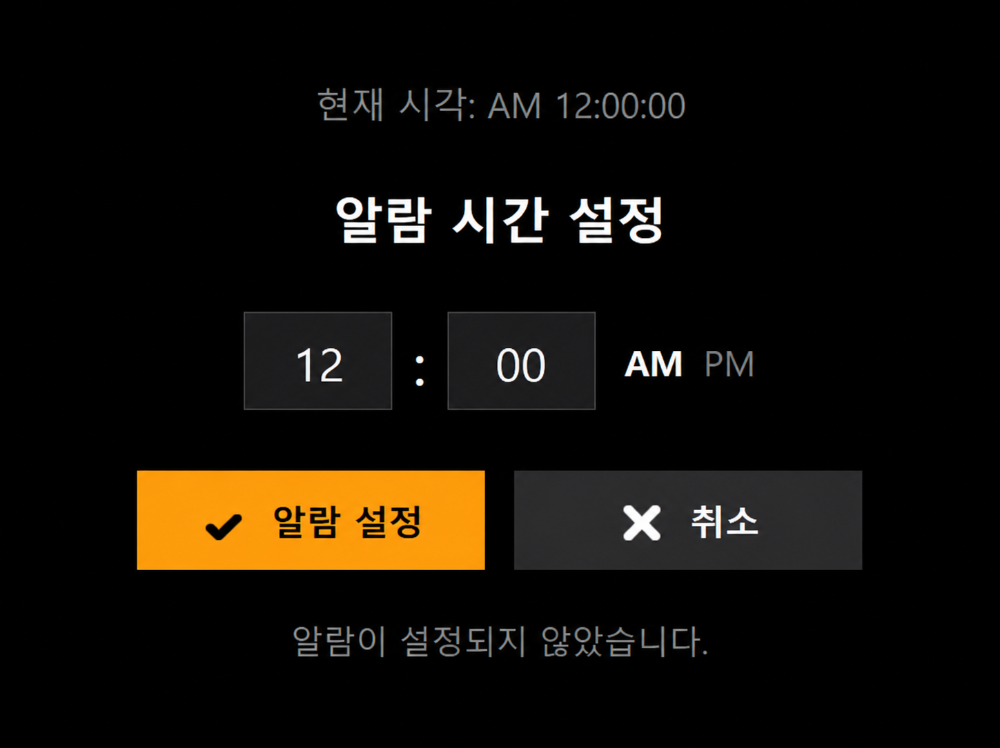

알람에 필요한 것만.
그 외는 모두 없다.
Windows 지원
실제 앱 화면
보이는 그대로.
더도 말고 덜도 말고.

왜 Just Alarm인가
앱을 열면 바로 알람 설정 화면.
하나면 충분하니까.
광고도, 구독도 없다.
오프라인에서도 그대로.
켜지고, 울리고, 끝.
처음부터 끝까지, C#으로.
설치하고 10초 안에 첫 알람 설정.
업데이트 내역 보기 →
Just Alarm은 안전한 오픈소스 앱이지만, 서명되지 않은 앱이라 Edge 브라우저와 Windows가 경고를 표시할 수 있습니다.
GitHub에서 소스코드 확인
Edge → ··· 클릭 → 유지 클릭 → 삭제 옆 ∨ 클릭 → 그래도 계속 클릭
Windows 실행 시 → 추가 정보 클릭 → 그래도 실행 클릭